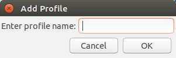
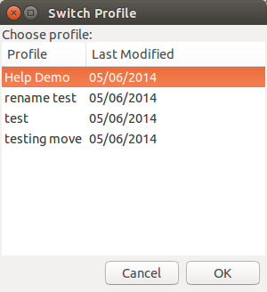
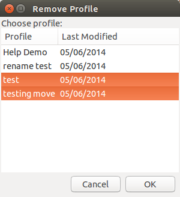

Using Profiles
Profiles can be used to have multiple, separate lists of data. They can be useful if you want one set of data to have a specific purpose and not have extra, unnecessary data included, or if you want separate sets of data for different locations.
Adding Profiles
To add a profile, select Add Profile from the Profiles menu or press Control-Shift-N. You will be presented with a window to enter the profile name in:

You will automatically switch to the new profile.
Switching Profiles
If you want to go back to the previous one, the Switch Profile window (accessible from the Profiles menu, or by pressing Control-Shift-S) allows you to choose from the existing profiles.

Removing Profiles
If you created a profile you no longer want, you can delete it from the Remove Profile window, available from the Profiles menu. This window allows for multiple profiles to be selected, so you can delete more than one profile at a time. Note that you cannot delete the current profile.

Moving and Copying Data
If you entered data into one profile that you later decided that you want in another, or if you want to copy data to another profile for a different use than the first, you can use the Copy and Move Data features. These features, available in the Profile menu, have two options; you can either copy/move the data to a new profile, or to an already existing one.
When copying or moving to a new profile, you will need to first enter a new profile name to use. After you do this you can select the data to put in it. When using an existing profile you need to select the profile and then also select the data. Note that when using an existing profile any date that already appears in the profile that is being copied or moved to and is also in the new data will only have the original data stored.
Using Profiles: Other Features
The Rename Profile feature, in the Profiles menu, can be used to change the name of an existing profile. Switch to the profile that you want to rename, and then you can enter the new name.
If you have two profiles and decide that you want to combine them into one, you can use the Merge Profiles feature. To do this, choose Merge Profiles from the Profiles menu and then select the two profiles to combine. Note that any date that appears in both of the profiles will have the data from the first selected profile kept.